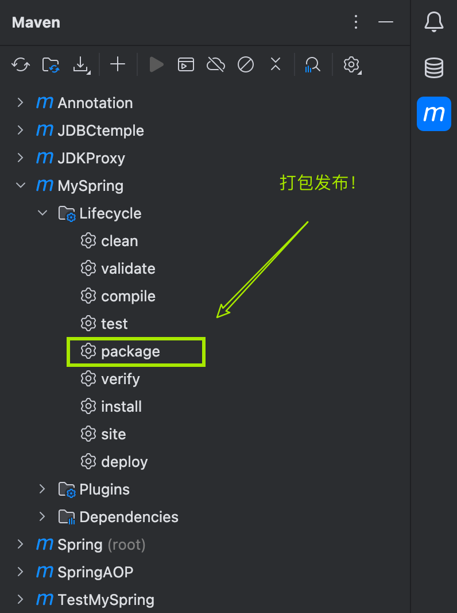
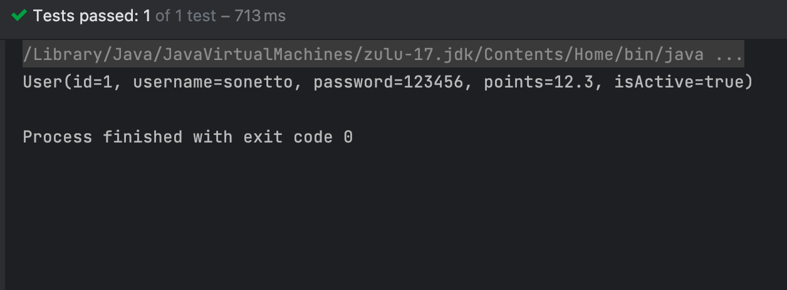

手写Spring框架
Spring底层是通过反射机制来实例化对象，以及属性注入的，在手写Spring框架之前，我们需要了解反射机制。
JAVA反射机制是在运行状态中，对于任意一个类，都能够知道这个类的所有属性和方法；对于任意一个对象，都能够调用它的任意一个方法和属性；这种动态获取的信息以及动态调用对象的方法的功能称为java语言的反射机制。Java反射机制在框架设计中极为广泛，需要深入理解。
通过反射，我们可以拿到类的属性，方法。 回顾Spring框架，我们需要编写一个spring的配置文件例如：spring.xml，在这个配置文件中，我们注册一个类，并注入属性值。
<?xml version="1.0" encoding="UTF-8"?>
<beans>
<beans>
<bean name="user" class="bean.User">
<property name="id" value="1"/>
<property name="username" value="sonetto"/>
<property name="password" value="123456"/>
<property name="points" value="12.3"/>
<property name="isActive" value="true"/>
</bean>
<bean name="userDao" class="bean.UserDao"/>
<bean name="userService" class="bean.UserService">
<property name="userDao" ref="userDao"/>
</bean>
</beans>
</beans>在实例化一个对象时，我们通过ClassPathXmlApplicationContext()，传入我们的配置文件，拿到一个ApplicationContext对象，通过ApplicationContext对象调用getBean（）方法来获取对象, 最终调用对象发方法，来使用Bean。
ApplicationContext context = new ClassPathXmlApplicationContext("mySpring.xml");
User user = (User) context.getBean("user");
System.out.println(user);
UserService userService = (UserService) context.getBean("userService");
userService.createUser();我们的最终目的就是调用对象的方法，而一个指定一个方法需要四要素： 什么对象（对象的全限定类名是什么？）什么方法（方法名），什么参数（参数的类型和数量），返回什么值。
指定来这方法的四个要素，我们就可以唯一的确定一个方法，然后调用该方法。
在spring的配置文件中，注册一个Bean时，我们需要提供这个Bean的全限定类名，也就是Bean标签内的class属性的内容。有了全限定类名，我们就可以通过反射机制调用class.forName()拿到这个对象的类。更进一步，通过这个类拿到构造方法，实例化对象。拿到我们需要的目标方法，最终调用这个目标方法。
有了整个大概的全景图，我们就可以开始编写我们自己的Spring框架了。
- 首先，让我们先编写一个
ApplicationContext接口类，这个类定义了getBean()方法
package org.loulan.spring;
public interface ApplicationContext {
Object getBean(String name);
}- 然后编写该接口的实现类
ClassPathXmlApplicationContext我们正是通过这个类来实例化一个ApplicationContext对象。回顾ApplicationContext context = new ClassPathXmlApplicationContext("mySpring.xml");这段代码，实例化这个类时，我们需要一个参数——Spring配置文件，这个参数对应一个构造方法，所以我们的ClassPathXmlApplicationContext也需要提供这个构造方法。
public ClassPathXmlApplicationContext(String resource) {}-
我们需要读取使用这个框架的配置文件，并拿到所有的Bean标签。要拿到这个xml文件并读取里面的标签已经属性，我们可以借助
SAXReader这个类来完成。通过Maven我们可以轻松的引入这个jar包。同时，我们还需要解析这个xml文件，通过Document来完成。所以我还需要dom4j的依赖。<!-- dom4j依赖--> <dependency> <groupId>org.dom4j</groupId> <artifactId>dom4j</artifactId> <version>2.1.4</version> </dependency> <!-- jaxen的依赖，因为要使用它解析XML文件--> <dependency> <groupId>jaxen</groupId> <artifactId>jaxen</artifactId> <version>2.0.0</version> </dependency>接下来就是愉快的编写代码啦！
package org.loulan.spring; import org.dom4j.Document; import org.dom4j.DocumentException; import org.dom4j.Element; import org.dom4j.Node; import org.dom4j.io.SAXReader; import org.slf4j.Logger; import org.slf4j.LoggerFactory; import java.lang.reflect.Constructor; import java.lang.reflect.Field; import java.lang.reflect.Method; import java.util.HashMap; import java.util.List; import java.util.Map; public class ClassPathXmlApplicationContext implements ApplicationContext{ private Map<String,Object>beans = new HashMap<String,Object>(); private Logger logger = LoggerFactory.getLogger(ClassPathXmlApplicationContext.class); public ClassPathXmlApplicationContext(String resource) { //1. 拿到这个xml配置文件 SAXReader reader = new SAXReader(); Document document = null; try { document = reader.read(ClassLoader.getSystemClassLoader().getResourceAsStream(resource)); // 获取所有的bean标签 List<Node> beanNodes = document.selectNodes("//bean"); // 遍历集合 beanNodes.forEach(beanNode -> { Element beanElt = (Element) beanNode; // 获取id String id = beanElt.attributeValue("name"); // 获取className String className = beanElt.attributeValue("class"); logger.info("id->"+id+" className->"+className); try { //通过反射拿到class Class<?> clazz = Class.forName(className); // 获得class的构造器 Constructor<?> constructor = clazz.getConstructor(); // 实例化对象 Object o = constructor.newInstance(); logger.info("实例化对象->"+o); // 暴露bean，放在map（缓存） beans.put(id,o); } catch (Exception e) { e.printStackTrace(); } }); //再次遍历bean，给属性赋值（DI） beanNodes.forEach(beanNode -> { Element beanElt = (Element) beanNode; // 获取id String id = beanElt.attributeValue("name"); // 获取className String className = beanElt.attributeValue("class"); // 获取实例化对象 Object bean = beans.get(id); logger.info("获取实例化对象"+bean.toString()); //拿到properties List<Node> properties = beanElt.selectNodes("property"); properties.forEach(property ->{ logger.info("获取property-> " + property); Element element = (Element) property; String name = element.attributeValue("name"); String arg = element.attributeValue("value"); String ref = element.attributeValue("ref"); String methodName = "set"+name.toUpperCase().charAt(0)+name.substring(1); logger.info("methodName="+methodName+" arg="+arg); Object actualValue = null; try { //获得属性 Field field = bean.getClass().getDeclaredField(name); Method method = bean.getClass().getMethod(methodName, field.getType()); logger.info("参数类型->"+field.getType().getSimpleName()); if(ref != null){ //如果参数是引用数据类型 method.invoke(bean,beans.get(ref)); } else if( arg != null){ //参数是简单数据类型 switch (field.getType().getSimpleName()){ case "boolean","Boolean": actualValue = Boolean.parseBoolean(arg); break; case "byte","Byte": actualValue = Byte.parseByte(arg); break; case "short","Short": actualValue = Short.parseShort(arg); break; case "int","Integer": actualValue = Integer.parseInt(arg); break; case "long", "Long": actualValue = Long.parseLong(arg); break; case "float","Float": actualValue = Float.parseFloat(arg); break; case "double","Double": actualValue = Double.parseDouble(arg); break; case "char","Character": actualValue = arg.charAt(0); break; case "String": actualValue = arg; break; } method.invoke(bean,actualValue); } } catch (Exception e) { e.printStackTrace(); } }); }); } catch (Exception e) { e.printStackTrace(); } } @Override public Object getBean(String name) { return beans.get(name); } }
代码很长，别急我们一步步分析：
这段代码做三件事：
-
通过
document = reader.read(ClassLoader.getSystemClassLoader().getResourceAsStream(resource));拿到配置文件。 -
拿到所以的bean标签,获取标签的name属性和和class属性值，name属性值是这个bean的id，class是这个类的全限定类名。
-
通过反射机制实例化对象，并放到map集合中。
这一步相当于把bean放入二级缓存中，提前暴露bean。map集合就是二级缓存，其中key存放对象的name或id，value存放这个实例化的对象。
//1. 拿到这个xml配置文件
SAXReader reader = new SAXReader();
Document document = null;
try {
document = reader.read(ClassLoader.getSystemClassLoader().getResourceAsStream(resource));
// 获取所有的bean标签
List<Node> beanNodes = document.selectNodes("//bean");
// 遍历集合
beanNodes.forEach(beanNode -> {
Element beanElt = (Element) beanNode;
// 获取id
String id = beanElt.attributeValue("name");
// 获取className
String className = beanElt.attributeValue("class");
logger.info("id->"+id+" className->"+className);
try {
//通过反射拿到class
Class<?> clazz = Class.forName(className);
// 获得class的构造器
Constructor<?> constructor = clazz.getConstructor();
// 实例化对象
Object o = constructor.newInstance();
logger.info("实例化对象->"+o);
// 暴露bean，放在map（缓存）
beans.put(id,o);
} catch (Exception e) {
e.printStackTrace();
}
});实例化bean之后，接下里就是依赖注入了（Dependency Injection）。我们需要再次遍历每一个bean节点，一个bean节点相当于一个bean对象。对于每一个bean对象，再次遍历bean对象的
这时候就是调用对象的set方法了，还记得调用方法的四要素吗？没错，我们需要方法所属的对象，方法名，方法参数，以及返回值类型。
其中，对象我们可以通过二级缓存拿到，也就是上一部分的map集合。方法参数也是属性值，在property标签的value属性值指明。返回值就更轻松了，set方法的返回值都是void。
那么剩下的，就是方法名了，按照Java命名规范规范，set方法名有set加上属性名的首字母大小组成，符合驼峰命名规范。我们拿到了属性值，就可以通过拼接字符串的方法来得到方法名。
但是还有一个问题，属性值有普通类型和引用类型两种，对应引用类型，我们的做法很简单，通过二级缓存拿到引用对象，再通过set方法注入就好啦。但是普通类型就比较麻烦了。
首先，普通类型太多，而我们从配置文件中拿到的数据都是字符串类型，如果目标属性是String类型的话很直接，直接调用set方法即可。但是如果属性类型是int类型，或者bool类型，我们就需要把String类型转换成对应的类型。
好在这些普通类都有对应的包装类型，通包装类型我们可以轻松的实现字符串类型的转换，所以我们需要的就是匹配每一个普通类型，对这样的类型做类型转换即可。
普通类型太多，出于学习的目的，假设我们的Spring框架只支持其中部分类型。
//再次遍历bean，给属性赋值（DI）
beanNodes.forEach(beanNode -> {
Element beanElt = (Element) beanNode;
// 获取id
String id = beanElt.attributeValue("name");
// 获取className
String className = beanElt.attributeValue("class");
// 获取实例化对象
Object bean = beans.get(id);
logger.info("获取实例化对象"+bean.toString());
//拿到properties
List<Node> properties = beanElt.selectNodes("property");
properties.forEach(property ->{
logger.info("获取property-> " + property);
Element element = (Element) property;
String name = element.attributeValue("name");
String arg = element.attributeValue("value");
String ref = element.attributeValue("ref");
String methodName = "set"+name.toUpperCase().charAt(0)+name.substring(1);
logger.info("methodName="+methodName+" arg="+arg);
Object actualValue = null;
try {
//获得属性
Field field = bean.getClass().getDeclaredField(name);
Method method = bean.getClass().getMethod(methodName, field.getType());
logger.info("参数类型->"+field.getType().getSimpleName());
if(ref != null){
//如果参数是引用数据类型
method.invoke(bean,beans.get(ref));
} else if( arg != null){
//参数是简单数据类型
switch (field.getType().getSimpleName()){
case "boolean","Boolean": actualValue = Boolean.parseBoolean(arg); break;
case "byte","Byte": actualValue = Byte.parseByte(arg); break;
case "short","Short": actualValue = Short.parseShort(arg); break;
case "int","Integer": actualValue = Integer.parseInt(arg); break;
case "long", "Long": actualValue = Long.parseLong(arg); break;
case "float","Float": actualValue = Float.parseFloat(arg); break;
case "double","Double": actualValue = Double.parseDouble(arg); break;
case "char","Character": actualValue = arg.charAt(0); break;
case "String": actualValue = arg; break;
}
method.invoke(bean,actualValue);
}
} catch (Exception e) {
e.printStackTrace();
}最后，提供一个getBean方法的接口，用于活动实例化的bean
@Override
public Object getBean(String name) {
return beans.get(name);
}到这里，我们的Spring框架就算编写完了，打包发布吧！
测试自己的Spring框架
创建一个Maven模块，并引入刚刚打包好的jar包吧
<dependency>
<groupId>cn.loulan</groupId>
<artifactId>MySpring</artifactId>
<version>1.0-SNAPSHOT</version>
</dependency>首先，我们需要一个Bean类
package bean;
import lombok.Data;
@Data
public class User {
private int id;
private String username;
private String password;
private float points;
private boolean isActive;
public void setIsActive(boolean active) {
isActive = active;
}
}
然后是Spring配置文件
<?xml version="1.0" encoding="UTF-8"?>
<beans>
<beans>
<bean name="user" class="bean.User">
<property name="id" value="1"/>
<property name="username" value="sonetto"/>
<property name="password" value="123456"/>
<property name="points" value="12.3"/>
<property name="isActive" value="true"/>
</bean>
<bean name="userDao" class="bean.UserDao"/>
<bean name="userService" class="bean.UserService">
<property name="userDao" ref="userDao"/>
</bean>
</beans>
</beans>编写测试类：
package bean;
import org.junit.Test;
import org.loulan.spring.ApplicationContext;
import org.loulan.spring.ClassPathXmlApplicationContext;
import org.springframework.beans.factory.support.DefaultSingletonBeanRegistry;
public class TestBean {
@Test
public void test(){
ApplicationContext context = new ClassPathXmlApplicationContext("mySpring.xml");
User user = (User) context.getBean("user");
System.out.println(user);
}
}
跑起来了！